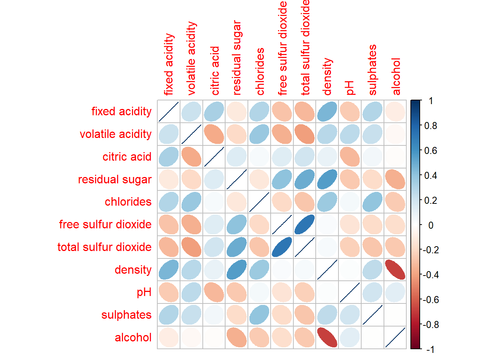
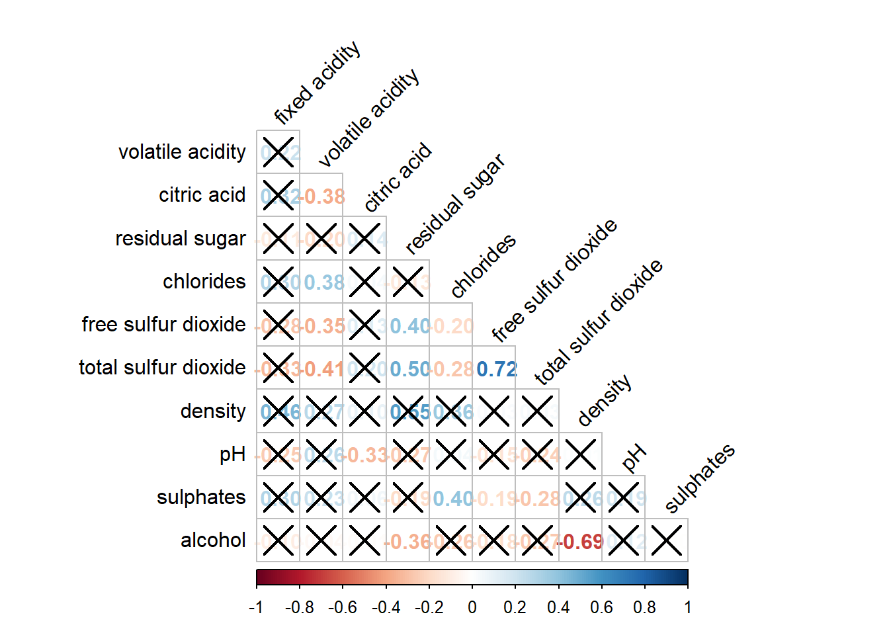

pacman::p_load(corrplot, ggstatsplot, tidyverse)Hands-on Exercise 5b: Visual Correlation Analysis
1 Overview
The correlation coefficient is a popular statistic that is used to measure the type and strength of the relationship between two variables. The values of a correlation coefficient range between -1.0 and 1.0. A correlation coefficient of 1 shows a perfect linear relationship between the two variables, while a -1.0 shows a perfect inverse relationship between the two variables. A correlation coefficient of 0 shows no linear relationship between the two variables.
When multivariate data are used, the correlation coefficients of the pair comparisons are displayed in a table form known as a correlation matrix or scatterplot matrix.
There are three broad reasons for computing a correlation matrix.
To reveal the relationship between high-dimensional variables pair-wisely.
To input into other analyses. For example, people commonly use correlation matrices as inputs for exploratory factor analysis, confirmatory factor analysis, structural equation models, and linear regression when excluding missing values pairwise.
As a diagnostic when checking other analyses. For example, with linear regression, a high amount of correlations suggests that the linear regression’s estimates will be unreliable.
When the data is large, both in terms of the number of observations and the number of variables, Corrgram is used to visually explore and analyse the structure and the patterns of relations among variables. It is designed based on two main schemes:
Rendering the value of a correlation to depict its sign and magnitude, and
Reordering the variables in a correlation matrix so that “similar” variables are positioned adjacently, facilitates perception.
This exercise aim to plot data visualisation for visualising correlation matrix with R, by creating a correlation matrix using pairs() , plot a corrgram using corrplot and create an interactive correlation matrix using plotly R.
2 Getting Started
2.1 Installing and loading the packages
For this exercise, the following R packages will be used.
- corrplot, an R package which provides a visual exploratory tool on correlation matrix that supports automatic variable reordering to help detect hidden patterns among variables.
2.2 Data import
The Wine Quality Data Set of UCI Machine Learning Repository is used which consists of 13 variables and 6497 observations.
wine <- read_csv("data/wine_quality.csv")3 Building a Correlation Matrix: Pairs() Method
Let us explore how to use pairs to build a correlation matrix.
The required input of pairs() can be a matrix or data frame. Columns 2 to 12 of the wine data frame are used to build the scatterplot matrix. The variables are fixed acidity, volatile acidity, citric acid, residual sugar, chlorides, free sulfur dioxide, total sulfur dioxide, density, pH, sulphates and alcohol.
pairs(wine[,2:12])
We can customise the arguments of the pairs function of R Graphics. For example, it is a common practice to show either the upper half or lower half of the correlation matrix instead of both. This is because a correlation matrix is symmetric.
To show the lower half of the correlation matrix, the upper.panel argument will be used as shown in the code chunk below.
pairs(wine[,2:12], upper.panel = NULL)
Similarly, we can display the upper half of the correlation matrix by using the code chunk below.
pairs(wine[,2:12], lower.panel = NULL)
To show the correlation coefficient of each pair of variables instead of a scatter plot, panel.cor function will be used. Correlations with higher coefficients will be displayed in a larger font.
Show the code
panel.cor <- function(x, y, digits = 2, prefix = "", cex.cor, ...) {
usr <- par("usr")
on.exit(par(usr = usr))
par(usr = c(0, 1, 0, 1))
r <- abs(cor(x, y, use = "complete.obs"))
txt <- format(c(r, 0.123456789), digits = digits)[1]
txt <- paste(prefix, txt, sep = "")
if(missing(cex.cor)) cex.cor <- 0.8/strwidth(txt)
text(0.5, 0.5, txt, cex = cex.cor * (1 + r) / 2)
}
pairs(wine[,2:12], upper.panel = panel.cor)
4 Visualising Correlation Matrix: ggcorrmat()
One major limitation of the correlation matrix is that the scatter plots appear very cluttered when the number of observations is relatively large (i.e. more than 500 observations). To overcome this problem, Corrgram data visualisation technique suggested by D. J. Murdoch and E. D. Chow (1996) and Friendly, M (2002) and will be used.
Several R packages provide functions to plot a corrgram, such as corrgram, ellipse and corrplot. Some R packages like ggstatsplot package also provide functions for building a corrgram.
We will learn how to visualise the correlation matrix by using ggcorrmat() of ggstatsplot package. It is able to provide a comprehensive and yet professional statistical report as shown in the figure below.
Show the code
ggstatsplot::ggcorrmat(data = wine, cor.vars = 1:11,
ggcorrplot.args = list(outline.color = "black",
hc.order = TRUE,
tl.cex = 10),
title = "Correlogram for wine dataset",
subtitle = "Four pairs are not significant at p < 0.05")
Note
cor.varsargument is used to compute the correlation matrix needed to build the corrgram.ggcorrplot.argsargument provides additional (mostly aesthetic) arguments that will be passed toggcorrplot::ggcorrplotfunction. The list should avoid any of the following arguments since they are already internally being used: corr, method, p.mat, sig.level, ggtheme, colors, lab, pch, legend.title, digits.
Show the code
grouped_ggcorrmat(data = wine, cor.vars = 1:11,
grouping.var = type,
type = "robust",
p.adjust.method = "holm",
plotgrid.args = list(ncol = 2),
ggcorrplot.args = list(outline.color = "black",
hc.order = TRUE,
tl.cex = 10),
annotation.args = list( tag_levels = "a",
title = "Correlogram for wine dataset",
subtitle = "The measures are: alcohol, sulphates, fixed acidity, citric acid, chlorides, residual sugar, density, free sulfur dioxide and volatile acidity",
caption = "Dataset: UCI Machine Learning Repository"
) )
Note
grouping.varargument is to build a facet plot.Behind group_ggcorrmat(), patchwork package is used to create the multiplot.
plotgrid.argsargument provides a list of additional arguments passed to patchwork::wrap_plots, except for guides argument which is already separately specified earlier.annotation.argsargument is calling plot annotation arguments of patchwork package.
5 Visualising Correlation Matrix: corrplot package
First, we need to compute the correlation matrix, then use corrplot to plot the corrgram.
wine.cor <- cor(wine[, 1:11])corrplot(wine.cor)
Note
These are the default settings used to plot the corrgram:
Visual object: circle
Layout: symmetric matrix.
Colour scheme: diverging blue-red. Blue colours are used to represent pair variables with positive correlation coefficients and red colours are used to represent pair variables with negative correlation coefficients. The intensity of the colour (saturation) is used to represent the strength of the correlation coefficient. Darker colours indicate a relatively stronger linear relationship between the paired variables. On the other hand, lighter colours indicate a relatively weaker linear relationship.
There are seven visual geometrics (parameter method) that can be used to encode the attribute values: circle, square, ellipse, number, shade, colour and pie.
Let us try the ellipse geometric.
corrplot(wine.cor, method = "ellipse") 
corrplot(wine.cor,
method = "ellipse",
type="lower", diag = FALSE,
tl.col = "black")
Note
The type argument of corrplor() supports three layout types, namely: “full”, “upper” or “lower”. The default is “full” which displays the full matrix.
The arguments diag and tl.col are used to turn off the diagonal cells and to change the axis text label colour respectively.
With corrplot package, it is possible to design the corrgram with a mixed visual matrix of one half and a numerical matrix on the other half.
Show the code
corrplot.mixed(wine.cor,
lower = "ellipse",
upper = "number",
tl.pos = "lt",
diag = "l",
tl.col = "black")
Note
The arguments lower and upper are used to define the visualisation method used. In this case, ellipse is used to map the lower half of the corrgram and the numerical matrix (i.e. number) is used to map the upper half of the corrgram.
The argument tl.pos is used to specify the placement of the axis label.
The argument diag is used to specify the glyph on the principal diagonal of the corrgram.
In statistical analysis, we are also interested to know which pair of variables their correlation coefficients are statistically significant.
Show the code
wine.sig = cor.mtest(wine.cor, conf.level = 0.95)
corrplot(wine.cor,
method = "number",
type = "lower",
diag = FALSE,
tl.col = "black",
tl.srt = 45,
p.mat = wine.sig$p,
sig.level = 0.05)
Matrix reordering is very important for mining the hidden structure and pattern in a corrgram. By default, the order of attributes of a corrgram is sorted according to the correlation matrix (i.e. “original”). The default setting can be overwritten by using the order argument of corrplot().
The four sorting methods are:
“AOE” is for the angular order of the eigenvectors. See Michael Friendly (2002) for details.
“FPC” for the first principal component order.
“hclust” for hierarchical clustering order.
- “hclust.method” for the agglomeration method to be used. “hclust.method” should be one of “ward”, “single”, “complete”, “average”, “mcquitty”, “median” or “centroid”.
“alphabet” for alphabetical order.
Show the code
corrplot.mixed(wine.cor,
lower = "ellipse",
upper = "number",
tl.pos = "lt",
diag = "l",
order="AOE",
tl.col = "black")
If using hclust, corrplot() can draw rectangles around the corrgram based on the results of hierarchical clustering.
Show the code
corrplot(wine.cor,
method = "ellipse",
tl.pos = "lt",
tl.col = "black",
order="hclust",
hclust.method = "ward.D",
addrect = 3)